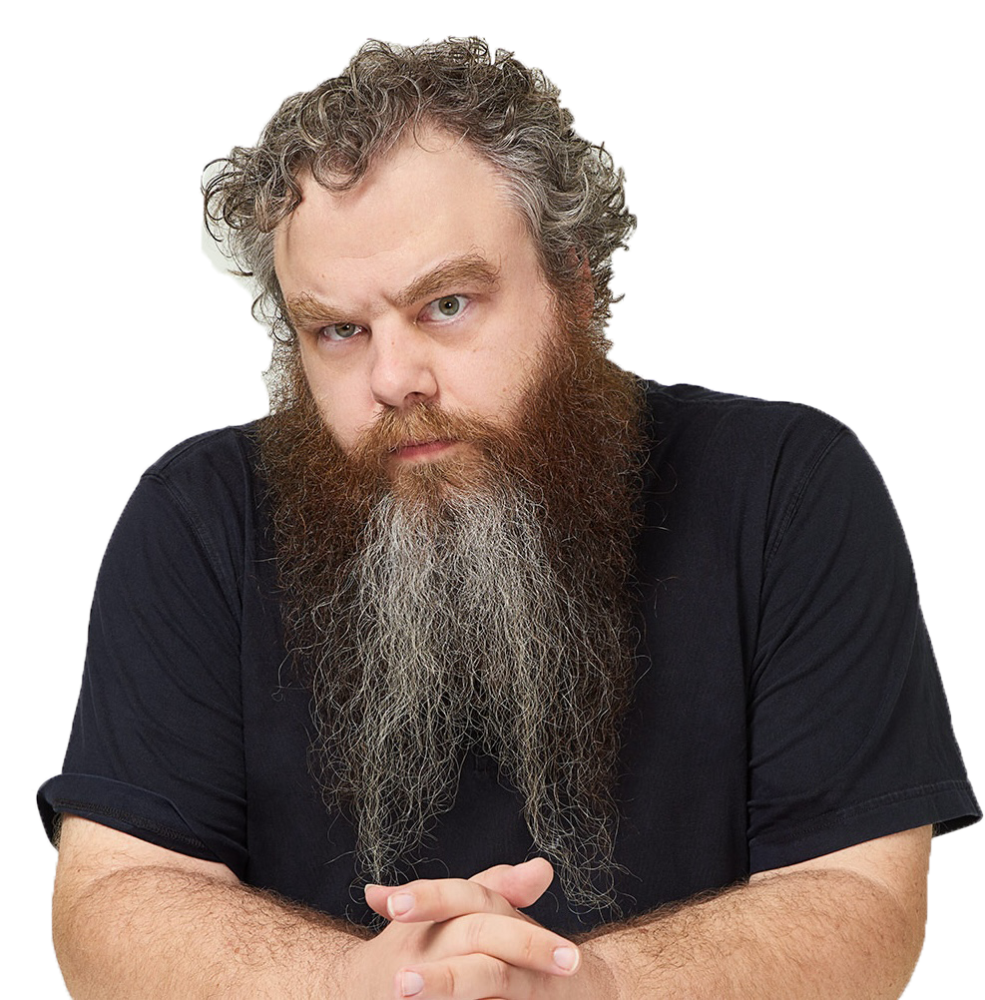

Patrick Rothfuss
Patrick Rothfuss was born in Madison, Wisconsin to awesome parents who encouraged him to read and create through reading to him, gentle boosts of self-esteem, and deprivation of cable television. During his formative years, he read extensively and wrote terrible short stories and poetry to teach himself what not to do.
Patrick matriculated at the University of Wisconsin-Stevens Point, initially studying chemical engineering which led to a revelation that chemical engineering is boring. He then spent the next nine years jumping from major to major, taking semesters off, enjoying semesters at part-time, and generally rocking the college student experience before being kindly asked to graduate already. Surprisingly enough, he had enough credits to graduate with an English major, and he did so grudgingly.
Patrick then went to grad school. He’d rather not talk about it.
All this time Patrick was working on “The Book,” as he and his friends lovingly titled it. When he returned to Stevens Point he began teaching half-time while trying to sell The Book to publishers. In the process, he disguised a chapter of The Book as a short story and won the Writers of the Future competition in 2002. This put him into contact with all the right people, and after deciding to split The Book into three installments, DAW agreed to publish it. In March 2007, The Name of the Wind was published to great acclaim, winning the Quill Award and making the New York Times Bestseller list.
All this success was wonderful. Patrick eventually had to stop teaching in order to focus on writing, though he screwed that up by having an adorable baby with his adorable girlfriend. He started a charity fundraiser called Worldbuilders and published a not-for-children children’s book called The Adventures of the Princess and Mr. Whiffle in July of 2010 through Subterranean Press, which was adorable, and seriously isn’t for children.
After a great deal of work and a few cleared throats and raised eyebrows from his patient editor,
Wise Man’s Fear came out in March 2011 to even more acclaim, making #1 on the New York Times
Bestseller list. Life continues to rock for him, and he’s working hard on writing the final installment
of the series.